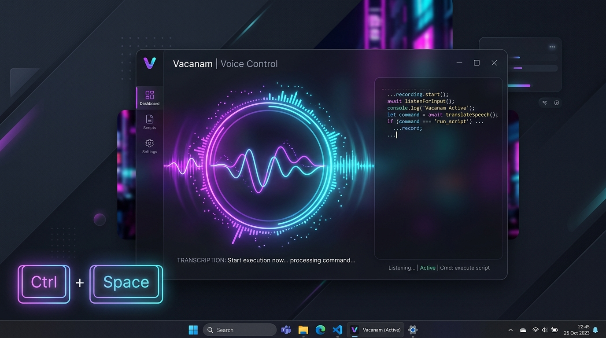

Production-quality voice typing and local AI text refinement for Windows 10 & 11. Hold Ctrl + Space anywhere, speak your mind, and watch accurate text appear instantly in any application.

Try the live simulator below right now in your browser. Hold down the button or press Ctrl + Space on your keyboard.
Engineered with high performance C# / .NET 10, low-latency WASAPI capture, and local AI.
Hold Ctrl+Space from any application. Release to inject speech directly at your cursor without switching windows.
Sub-300ms transcription speed powered by whisper.cpp with pure C# audio resampling and multi-threaded CPU/GPU inference.
Optional sub-second grammar refinement with local GGUF models (Qwen 2.5 / Llama 3.2) to fix punctuation and eliminate filler words.
Seamless transcription across English, Hindi, Spanish, German, French, Chinese, Japanese, and 90+ other global languages.
Zero cloud APIs, zero telemetry, and zero tracking. Audio is processed in memory and never saved to disk.
Read Privacy Policy →Opt-in local SQLite database with instant full-text search, process tagging (Chrome, VS Code, Word), and one-click copy.
Real-time detection for muted microphones or low volume levels (<30%), warning you on the visual overlay instantly.
Intelligent fallback across Clipboard + Paste, native Win32 SendInput for command terminals, and UIAutomation.
Pick the optimal balance between inference speed and accuracy for your hardware.
Instant response time. Best for short commands and low-power laptops.
Recommended for everyday dictation. Superb balance of speed and high accuracy.
Exceptional accuracy for complex technical terminology and diverse accents.
Maximum accuracy for multilingual speech, dialects, and noisy environments.
Vacanam natively supports all 99 official OpenAI Whisper languages plus Auto-Detection.
A pipeline designed for ultra-low latency, zero data loss, and seamless text injection.
Win32 RegisterHotKey captures Ctrl+Space and resolves the target application's HWND and process name (VS Code, Chrome, etc.).
Low-overhead WASAPI audio streaming with pure managed C# 16kHz mono resampling without any native COM or MediaFoundation dependencies.
Energy-based Voice Activity Detection trims leading/trailing silence before executing multi-threaded Whisper.net inference.
LLamaSharp processes the raw transcript through local GGUF models (Qwen 2.5 / Llama 3.2) with your custom grammar rules.
Injects final text directly at the cursor via Clipboard or SendInput, and saves an opt-in audit log to local SQLite.
Everything you need to know about Vacanam, privacy, and system requirements.
%LOCALAPPDATA%\Vacanam\ folder.Download the latest installer or build from source. Free, open-source, and private forever.
🔒 Free code signing provided by SignPath.io, certificate by SignPath Foundation.